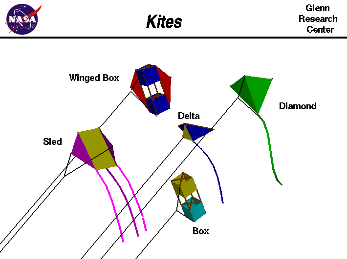

|

An excellent way for students to gain a feel for
aerodynamic forces
is to fly a kite.
History of Kites
Kites have been around for thousands of years and they are a part
of many different cultures around the world. There is a lot of information
available on the web concerning the history of kites, so we will not
duplicate that information here. We suggest
that you use your favorite search engine to find this information.
(Search on the phrase "History of Kites").
From an aerodynamics point of view, two of the most important users of
kites were the
Wright brothers.
In 1899, as they were developing their
theories for the control of an aircraft by using
wing warping,
they built a small maneuverable
kite to verify their ideas. Between 1900 and 1903 they would often fly
their
gliders
as unmanned
kites
at Kitty Hawk, North Carolina. These experiments led directly to their
successful 1903
aircraft.
Types of Kites
A wide variety of kite kits and kite accessories are available at department,
hobby, and toy stores. You can even design and build your own kites.
This slide shows some of the more popular types of kites. (The names for the
various kites are not standardized - what I call a diamond kite may be called
a two-stick kite at another site, and my "Delta" kite may be called a "bat"
somewhere else.) Once again, there is a lot of information available
on the web concerning kite design and purchase.
(Search on the phrase "Kite Design" with your search engine).
Forces on a Kite
Each of the kites on this slide
looks different
than another kite, but the
forces acting on all the kites is
exactly the same.
In fact, with the exception of
thrust,
the forces acting on a kite are also the same
forces which act on an airliner or a fighter plane.
Like an aircraft, kites are heavier than air and rely on
aerodynamic
forces to fly.
Gas balloons and bubbles, on the other hand, are
lighter than air and rely
on buoyancy forces to fly.
Like an aircraft, kites have a solid
frame
normally made of wood or plastic, and this frame is covered by a paper,
plastic, or cloth "skin" to generate the
lift necessary to overcome the kite's
weight.
A kite must be made as light as possible for good performance,
yet be strong enough to withstand high winds.
Determining the forces on a kite can be difficult, so we have prepared a
kite simulator to let you study these forces.
You can use
KiteModeler
to design your own kites.
You can then build a kite based on your design and
compare the results with the computer program.
Flying
While the forces on all kites are the same, each kite
flies
a little differently. Some kites are highly maneuverable and some kites are
very stable. There are kites with multiple control lines that can perform
stunts, while other kites can be flown to high altitudes.
We can use math techniques that you learn in school to
determine the altitude of a kite
graphically.
With a little more knowledge of mathematics, you can actually
calculate
the altitude at which the kite is flying.
Regardless of the type of kite, the flyer must always fly
safely for the protection of others, to
protect property, and to insure that the kite can be flown again.
Have Fun!
Activities:
Guided Tours
-
 Forces on a Kite
Forces on a Kite

-
Kite Flying
Navigation ..


- Beginner's Guide Home Page
|